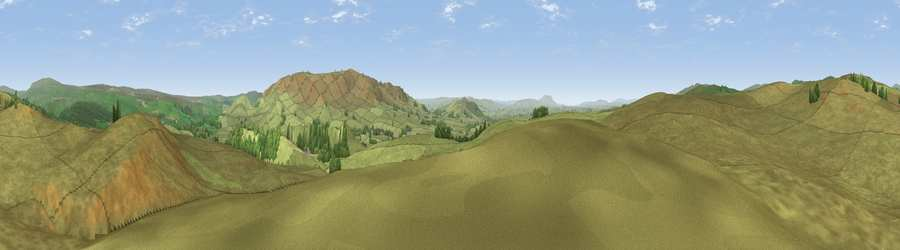

Viewpoint near Cracoe
#11414 in England · top 18% of its area beats it · near CracoeThe view, rendered

A 360° render of this exact spot computed from the terrain model, tree cover and land cover — summer colours, afternoon light, calibrated against photographs of famous viewpoints. Real trees, hedges and buildings will differ in detail.
The panorama
Grey silhouette: terrain skyline in each direction (720 bearings, Earth curvature and refraction included). Dashed green: skyline with trees (+15 m) and buildings (+8 m) as obstacles. Blue strip: how far the ground is visible on each bearing.
Where the view opens
Wedge length = distance to the farthest visible ground on that bearing (vegetation-aware). Rings at 10, 25 and 50 km.
What fills the view
97% grassland · 3% woodland
Angular shares of the visible panorama (visual magnitude), not map area. Landscape diversity 0.07 (0–1 Shannon).
Key numbers
More beautiful places nearby
The staircase of upgrades: each row has a higher view potential than everything closer. Driving times are estimates from straight-line distance, calibrated against real road routing — check an actual route before setting out.
| Place | Direction | Drive | Score |
|---|---|---|---|
| Viewpoint near Cracoe | SE · 1 km | ~4 min | 63.5 |
| Stebden Hill | ESE · 4 km | ~9 min | 64.5 |
| Viewpoint near Malham | W · 4 km | ~9 min | 67.8 |
| Cracoe Fell | SE · 4 km | ~10 min | 75.1 |
| Viewpoint near Kettlewell | NNE · 13 km | ~24 min | 75.6 |
| Viewpoint near Kettlewell | NNE · 14 km | ~26 min | 76.6 |
| Viewpoint near Bewerley | E · 16 km | ~28 min | 76.8 |
| Viewpoint near Buckden | N · 17 km | ~29 min | 77.3 |
54.05462, -2.05305 · source: screening · position refined by local search. Computed location — check access rights before visiting.